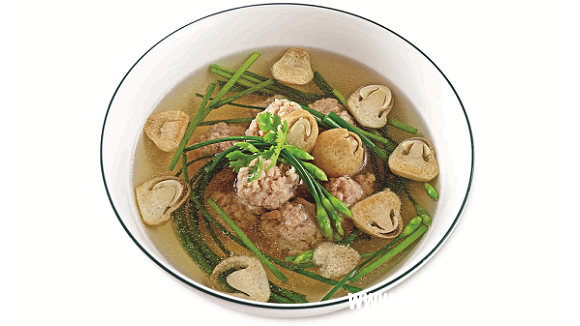

Thịt bằm nấu nấm, bông hẹ

Nguyên liệu
- 150g thịt heo bằm
- 100g nấm rơm
- 150g bông hẹ
- 3 thìa cà phê hạt nêm từ Thịt Thăn, Xương Ống và
Tủy - Bổ sung Vitamin A - Bổ sung Vitamin A
- 1 thìa cà phê nước mắm chấm Knorr
- Khẩu phần 4
- Chuẩn bị 20 phút
- Thực hiện 20 phút
Hướng dẫn thực hiện
- Cho 1 thìa cà phê hạt nêm từ Thịt Thăn, Xương Ống và Tủy - Bổ sung
Vitamin A vào thịt bằm, đánh cho dai sau đó cho vào tủ lạnh
- Nấm rơm cắt hình chéo trên đầu nấm, rửa sạch qua nước muối. Bông hẹ cắt
khúc khoảng 5cm
- Thịt bằm vò viên tròn vừa ăn
- Đun sôi 700ml nước, cho thịt bằm vào nấu sôi, cho tiếp nấm rơm vào, khi
nước sôi lại thì cho bông hẹ vào, nêm 2 thìa cà phê hạt nêm từ Thịt Thăn,
Xương Ống và Tủy - Bổ sung Vitamin A, 1 thìa cà phê nước mắm chấm vào, để
thêm 2 phút, tắt bếp.